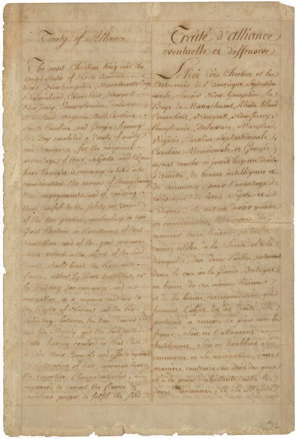

U.S. FOREIGN POLICY / WEEK 01
How the United States became independent
- 1776–1800
- Dr. Murat Toman
U.S. FOREIGN POLICY / WEEK 01
The main idea
- The United States began as a weak new country. Winning independence and surviving afterward required foreign help, money, and difficult choices about war and peace.
- The new republic’s language of freedom existed alongside slavery and the loss of Indigenous land and authority. A national success story can hide these unequal experiences. To understand the founding, compare what leaders promised with who gained rights, who remained excluded, and whose choices the new state restricted.
U.S. FOREIGN POLICY / WEEK 01
Where this week fits in history
| When | Selected event |
|---|---|
| 1778 | French alliance supports American independence |
| 1787 | Constitution allocates foreign-policy powers |
| 1803 | Louisiana Purchase |
| 1823 | Monroe Doctrine |
U.S. FOREIGN POLICY / WEEK 01
History through a source

- This document is evidence of an official statement or decision. Its wording and appearance help us identify the source, but its promises still need to be checked against evidence of actions and results.
- Use the linked transcription or PDF to read the text. Ask who issued it, what it claims, and whose viewpoint is missing.
U.S. FOREIGN POLICY / WEEK 01
Key words explained
- Republic: A political system without a hereditary monarch, in which public authority operates through political institutions.
- Alliance: An agreement to cooperate, often for security or war.
U.S. FOREIGN POLICY / WEEK 01
Key words explained
- Neutrality: A decision to stay out of a particular war.
- Recognition: Another government’s acceptance of a state or government’s political standing.
U.S. FOREIGN POLICY / WEEK 01
France helped make independence possible
- American forces could not rely on their own resources alone.
- France provided money, military help, and naval power because it wanted to weaken Britain. France was a monarchy, yet it supported a republican revolution: countries can cooperate because their interests overlap even when their political systems differ.
U.S. FOREIGN POLICY / WEEK 01
Foreign policy needs rules at home
- Independence left a practical problem: who could make promises to other countries and pay for them? The Constitution divided foreign-policy powers among institutions.
- Presidents conduct diplomacy, while Congress controls important powers over money and war, and the Senate has a role in treaties. A foreign promise depends partly on support at home.
U.S. FOREIGN POLICY / WEEK 01
Neutrality was a choice
- Neutrality means staying out of a particular war. In the 1790s, the United States still traded and negotiated with countries at war in Europe.
- Staying out required decisions about shipping, trade, and relations with Britain and France. Neutrality did not mean having no contact with the world.
U.S. FOREIGN POLICY / WEEK 01
Ideas and military help worked differently
- Republican ideas and Benjamin Franklin’s reputation could make the American cause attractive to foreign audiences. Armies, ships, and money changed the military balance more directly.
- Both mattered, but admiration alone could not win a war. Ask what each tool actually made possible.
U.S. FOREIGN POLICY / WEEK 01
Independence did not give everyone equal freedom
- The new republic’s language of freedom existed alongside slavery and the loss of Indigenous land and authority.
- A national success story can hide these unequal experiences. To understand the founding, compare what leaders promised with who gained rights, who remained excluded, and whose choices the new state restricted.
U.S. FOREIGN POLICY / WEEK 01
Politics at home and abroad
- At home: The new government had to divide power and find money for foreign commitments.
- Abroad: It needed help against Britain and later tried to avoid costly European wars.
- The connection: domestic support and resources affect what leaders can promise abroad. International events can change domestic priorities.
U.S. FOREIGN POLICY / WEEK 01
How power worked
| Form of influence | How it operated in this week |
|---|---|
| Hard power | French ships, military forces, and material help changed what the revolutionaries could achieve. |
| Soft power | The appeal of republican ideas helped the American cause gain attention and support. |
- An attractive political cause helped diplomacy, but French strategic rivalry and material assistance were indispensable.
U.S. FOREIGN POLICY / WEEK 01
A worked explanation
- Does an alliance prove that two countries share the same political values?
- No. France and the revolutionaries shared an interest in weakening Britain even though France was a monarchy. Cooperation can rest on shared interests as well as shared values.
- Why this matters: The new republic’s language of freedom existed alongside slavery and the loss of Indigenous land and authority. A national success story can hide these unequal experiences. To understand the founding, compare what leaders promised with who gained rights, who remained excluded, and whose choices the new state restricted.
U.S. FOREIGN POLICY / WEEK 01
Practice with the documents
- Open the 1778 Treaty of Alliance. Find one promise about military help.
- Open the Constitution. Find an institution with a role in making or funding foreign commitments.
- Write three sentences explaining why a promise abroad needs authority and resources at home. Do not apply the later Constitution to the original treaty negotiation.
U.S. FOREIGN POLICY / WEEK 01
How to support an answer
- A claim is what you argue. Evidence is a specific passage, event, or finding that supports it. Explain the connection between them.
- Example structure: “The document claims ____. This suggests ____. It cannot by itself show ____.”
- A speech can establish what a speaker said. Evidence of actions and consequences is needed to judge whether the policy worked.
U.S. FOREIGN POLICY / WEEK 01
What to remember
- Independence depended on international assistance as well as domestic mobilization.
- Constitutional design linked external commitments to domestic authorization and resources.
- Neutrality was active engagement under constraints, not isolation.
- Attraction and military power interacted but operated through different mechanisms.
U.S. FOREIGN POLICY / WEEK 01
Reading guide
- Treaty of Alliance with France (1778) A document from the period. Use it to identify what officials claimed or authorized, then check other evidence for the consequences. External source page; access may vary.
- Constitution of the United States (1787) A document from the period. Use it to identify what officials claimed or authorized, then check other evidence for the consequences. External source page; access may vary.
Treaty of Alliance with France (1778) — External source page; access may vary.
Constitution of the United States (1787) — External source page; access may vary.
U.S. FOREIGN POLICY / WEEK 01
Reading guide
- French Alliance and European Diplomacy, 1778–1782 A retired historical background essay. Use it for context, and compare its account with scholarship and other perspectives. External source page; access may vary.
- From Colony to Superpower: U.S. Foreign Relations since 1776 A scholarly narrative companion for historical periods. Select the relevant period; no unverified page assignments are supplied. Publisher record; full text may require institutional access.
French Alliance and European Diplomacy, 1778–1782 — External source page; access may vary.
Office of the Historian Milestones: retired series, retained online for historical reference; not a current-policy source.
From Colony to Superpower: U.S. Foreign Relations since 1776 — Publisher record; full text may require institutional access.
U.S. FOREIGN POLICY / WEEK 01
Reading guide
- Soft Power A foundational theoretical reading, to be tested against historical cases rather than treated as a universal explanation. JSTOR article; full text may require institutional access.
Soft Power — JSTOR article; full text may require institutional access.
U.S. FOREIGN POLICY / WEEK 01
Video and audio guide
- Senator Tim Kaine discusses Washington’s Farewell Address Examine a modern interpretation of Washington’s advice on foreign attachments and political leadership.
- The Neutrality Crisis Connect the Genêt affair to executive authority and the vulnerability of the early republic.
Senator Tim Kaine discusses Washington’s Farewell Address — Free provider page; external player may require consent or be region-dependent
Modern interpretation, not a recording of Washington; provider page contains the embedded video.
The Neutrality Crisis — Free provider page; external player may require consent or be region-dependent
May 20, 2024; audio and transcript.
U.S. FOREIGN POLICY / WEEK 01
Using the sources carefully
- Linked readings and media offer particular viewpoints. Compare them with the lesson and other evidence. Some sources require institutional access.
- Media links and descriptions were checked when the course resources were prepared. Full playback was not tested.